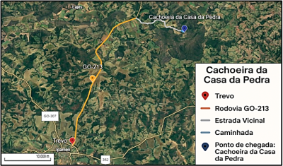
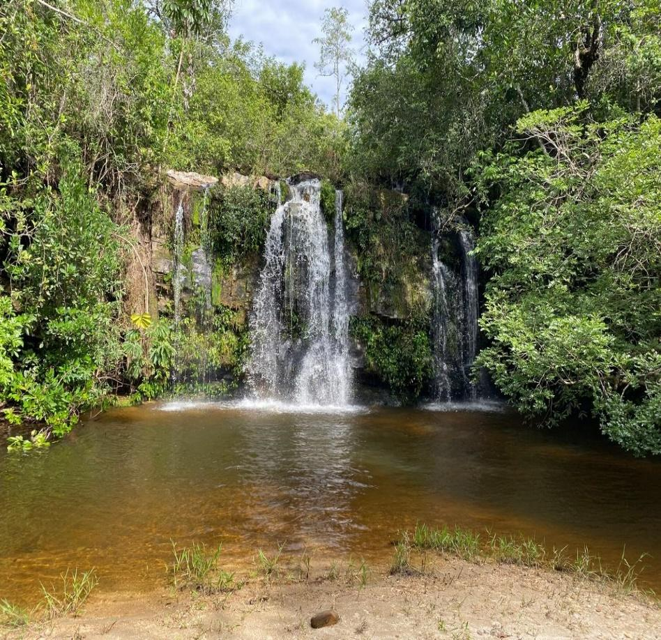
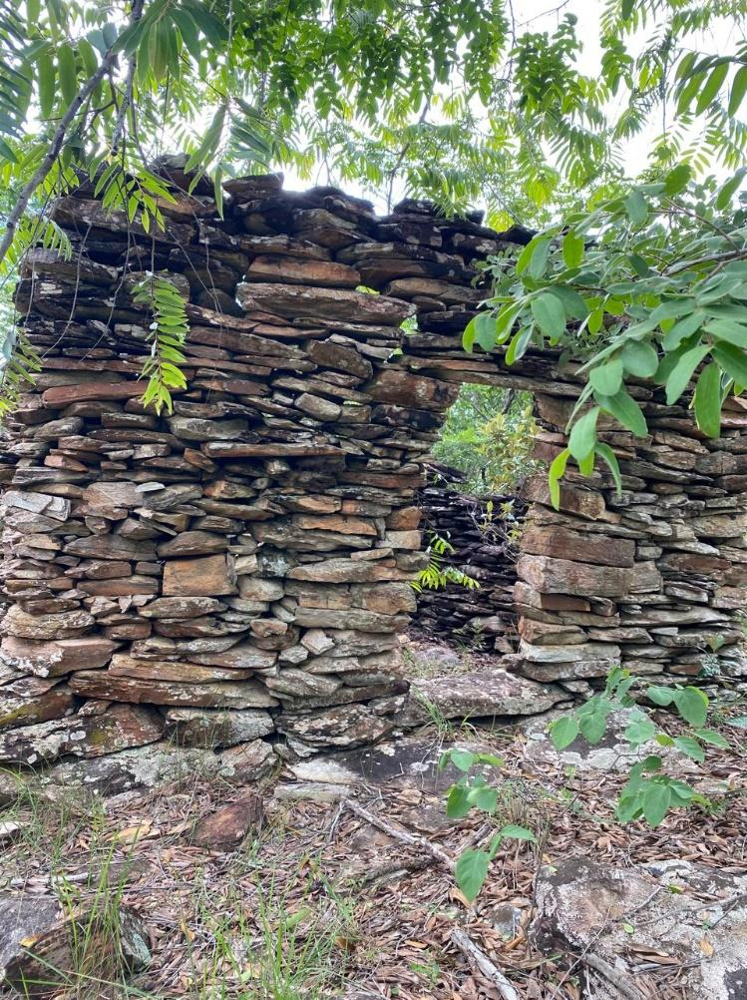
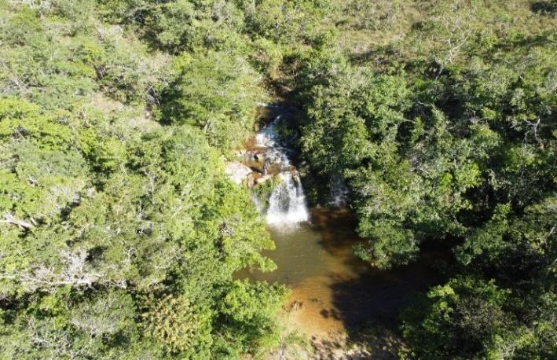
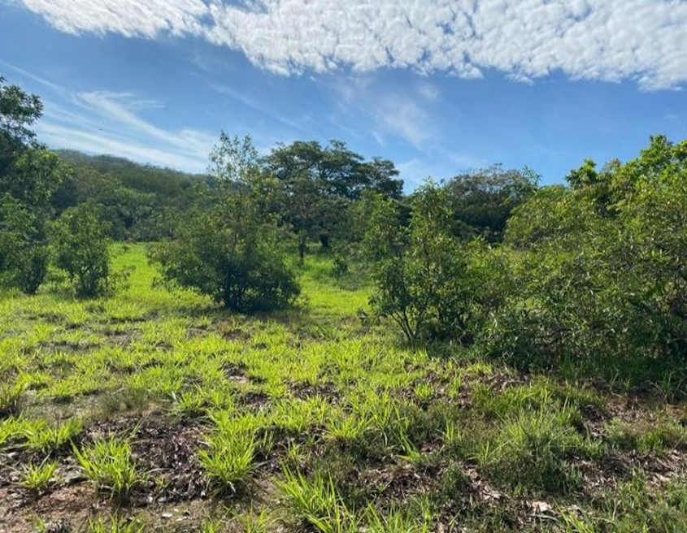
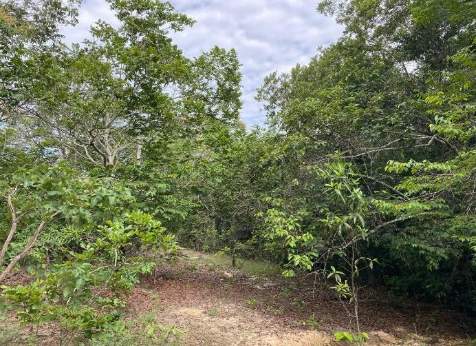
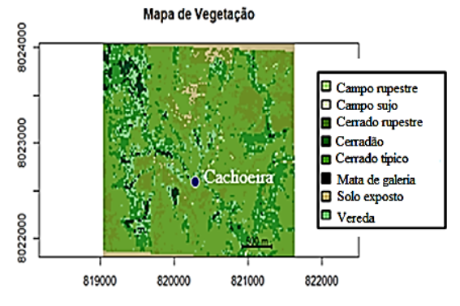

Cachoeira da Casa da Pedra
A rota da Cachoeira da Casa da Pedra é um atrativo natural que fica a aproximadamente 33 km do centro da cidade de Ipameri–GO, localizada a uma altitude de 685 metros acima do nível do mar. O nome pelo qual é conhecida popularmente, Cachoeira da Casa da Pedra, não possui registro formal em cartório, tendo surgido a partir da convivência histórica de moradores da região e visitantes frequentes. Trata-se, portanto, de uma denominação tradicional, transmitida oralmente ao longo do tempo, reforçando o vínculo afetivo e cultural da comunidade com o local.
O acesso à trilha que leva à Cachoeira da Casa de Pedra é considerado fácil. O percurso é acessível a diferentes perfis de visitantes, desde caminhantes ocasionais até praticantes frequentes de atividades ao ar livre, principalmente ciclistas. É também indicada para excursões escolares, possibilitando a condução de grupos de até 35 alunos com tranquilidade, desde que acompanhados por responsáveis.
Atenção e Recomendações
- Não exige roupas específicas, recomendando-se apenas vestimentas leves para proteção solar, sapatos fechados, uso de protetor solar, repelente.
- Mantenha o devido cuidado com o recolhimento do lixo, caso sejam levados lanches.
- O poço apresenta aproximadamente 1,5 m de profundidade, caso seja utilizado para banho, sendo importante atenção e supervisão constante.
A Tabela 1 contém dados sobre as distâncias do percurso completo (aproximadamente 32 km – com saída a partir do Trevo para Campo Alegre de Goiás), de acordo com cada via.
| Tipo de via | Distância |
|---|---|
| Rodovia GO-213 – pavimentada | 23,18 km |
| Estrada Vicinal - sem pavimentação | 8.4 km |
| Caminhada | 0,5 km |
A Figura 1 mostra uma imagem de satélite da região e do trajeto completo da Trilha da Cachoeira da Casa da Pedra.

A principal atração do percurso é a própria cachoeira, que apresenta uma queda d’água de cerca de 8 metros de altura, formando uma piscina natural de águas cristalinas, ideal para banho.

Complementando a beleza cênica, destaca-se a Casa da Pedra, uma construção rústica que agrega valor histórico, paisagístico e turístico ao local. Segundo relatos da memória oral de moradores antigos da região, essa edificação teria sido construída por um estrangeiro natural da Letônia, que atuava como garimpeiro e relojoeiro e que residiu em Ipameri. Conforme essas narrativas, a edificação teria sido utilizada como abrigo de apoio às atividades de garimpo e pesca na região, sendo sua construção em pedra associada a práticas construtivas tradicionais daquele país, onde esse tipo de edificação é culturalmente recorrente.

Esse conjunto natural e arquitetônico configura um importante ponto de interesse ecológico e potencial turístico para a região, oferecendo aos visitantes uma experiência de imersão na natureza preservada do cerrado goiano, com possibilidades para atividades de lazer, educação ambiental e ecoturismo.
O percurso apresenta uma variedade de plantas típicas do bioma Cerrado, exibindo uma paisagem natural deslumbrante, como ilustrado na Figura 4.

A seguir serão apresentados detalhes dessa cobertura vegetal, acompanhados de análises comparativas sobre suas alterações ao longo de um período de nove anos.
A Tabela 2, apresenta dados sobre a vegetação predominante na região nos anos de 2016 e 2024, enquanto as Figuras 5 e 6 mostram as figuras atuais de 2024.
| Ano | Campo rupestre | Campo sujo | Cerrado rupestre | Cerradão | Cerrado típico | Mata de galeria | Solo exposto | Vereda |
|---|---|---|---|---|---|---|---|---|
| 2016 | 0,32% | 0,52% | 29,79% | 14,86% | 47,81% | 0,90% | 3,35% | 2,41% |
| 2024 | 0,24% | 0,20% | 13,17% | 19,36% | 52,33% | 3,00% | 4,14% | 7,52% |


A predominância do Cerrado típico ressalta a característica mais comum do bioma na região, com árvores esparsas, arbustos retorcidos e grande biodiversidade. O Cerradão, por sua vez, representa uma formação mais densa e florestada do Cerrado. O Cerrado rupestre, geralmente associado a solos rasos e rochosos, ao longo dos anos, sofreu reduções superiores a 10%, enquanto os demais tipos de vegetação não sofreram alterações significativas.
A seguir está disposto o mapa de cobertura vegetal da área correspondente à Trilha da Cachoeira da Casa da Pedra (Figura 7), para 2024.

A figura 7 ajuda a visualizar o padrão espacial da vegetação predominante - Cerrado típico e o Cerradão.
Interpretação das Mudanças na Vegetação (2016–2024)
Ao analisar os dados estimados de 2016 até 2024, observa-se que a vegetação predominante em todo o período continua sendo o Cerrado típico, permanecendo com uma representatividade superior a 52%, o que revela relativa estabilidade nessa fitofisionomia.
O Cerrado rupestre apresentou uma redução significativa na cobertura vegetal e fragmentação das formações rochosas, passando de 29,79% para 13,17%. Essa perda afeta a biodiversidade e a estabilidade do meio ambiente local e pode ser decorrente de ações antrópicas e uso impróprio do solo.
Já a Mata de galeria, mostrou variações moderadas, indicando relativa estabilidade nas áreas úmidas que a sustentam. As Veredas, vegetações típicas de solos hidromórficos, apresentaram um aumento de 5%, mostrando constância ecológica.
É importante destacar a baixa porcentagem de Solo exposto, e que os tipos de vegetação menos representativos, como Campo sujo, oscilaram pouco. No entanto, essas variações menores, bem como discrepâncias, devem ser interpretadas com cautela. Essas flutuações são atribuídas, em parte, a limitações do modelo de classificação utilizado nas análises de sensoriamento remoto, que nem sempre conseguem distinguir com precisão as transições sutis entre fitofisionomias, especialmente em áreas de transição ecológica (ecótonos).
Constata-se, portanto, que as mudanças observadas entre 2016 e 2024 não indicam degradação evidente, mas sim possíveis processos naturais de sucessão ecológica e variações metodológicas nos levantamentos de dados, que devem ser considerados nas análises ambientais.
Em termos gerais, podemos notar que as alterações observadas podem estar relacionadas à regeneração natural, à falta de distúrbios recorrentes ou até mesmo a mudanças climáticas e no uso do solo nas áreas adjacentes, como a ampliação de pastagens ou lavouras.